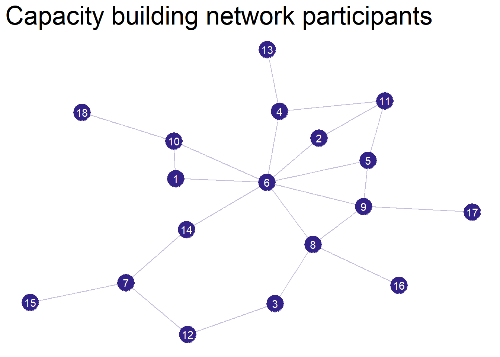
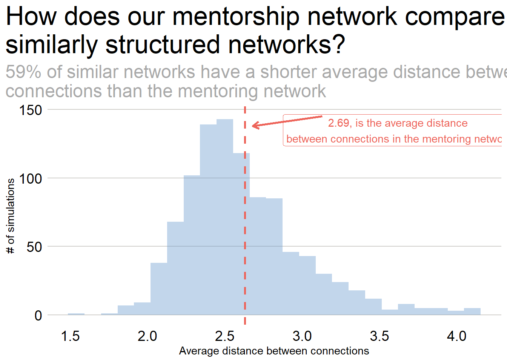

Capacity Strengthening network, Haiti
Contextual understanding of network
Introduction
This is an anonymized version of a network analysis to understand better the context in which an analytical skills capacity building network exists. The individuals and locations presented here are not real. This effort consists of baseline data collection using a survey that asked about current skills and who individuals already reach out to for mentoring.
First, we will look at the different statistical and software skills, and then we will analyze the informal mentoring network. To help us make sense of the network statistics, we will simulate similar networks to help us understand the statistics in context. Next year we will have year-on-year comparison data to help us understand how the network is adapting and evolving.
Our participants come from Port-au_Prince, St. Marc, and Cap Haitian in Haiti.
Summary Statistics
We received 18 responses to the survey with 6 responses from participants in Port-au-Prince, 5 responses from participants in St. Marc, and 7 responses from participants in Cap Haitian.
Networks
To better understand the network it helps to visualize it. This network has 18 nodes and 23 edges.
Warning: Using the `size` aesthetic in this geom was deprecated in ggplot2 3.4.0.
ℹ Please use `linewidth` in the `default_aes` field and elsewhere instead.Warning in grid.Call(C_textBounds, as.graphicsAnnot(x$label), x$x, x$y, : font
family not found in Windows font database
Warning in grid.Call(C_textBounds, as.graphicsAnnot(x$label), x$x, x$y, : font
family not found in Windows font database
Network statistics
How do these statistics compare with what we would expect from similar networks? We can run some simulations to find out. To do this, we set up network parameters with the same number of nodes and the same density, and then we simulate 1000 networks.
Network | Avg. Density | Avg. Distance | Avg. Betweenness | Avg. Eigenvector |
|---|---|---|---|---|
Mentorship | 0.15 | 2.69 | 14.39 | 0.33 |
Without any comparison these statistics probably do not mean much. So, we should run some comparison statistics using 1000 simulated networks that are similar in make up to the capacity building network.
Network | Avg. Density | Avg. Distance | Avg. Betweenness | Avg. Eigenvector |
|---|---|---|---|---|
Mentorship | 0.15 | 2.69 | 14.39 | 0.33 |
Simulated Mentorship | 0.15 | 2.68 | 12.02 | 0.44 |
Now we can see that our network is a little less dense and nodes are a little farther apart. In addition, there is a high average value for betweenness in our network due to a few nodes being the “gatekeepers” to the rest of the nodes. The average Eignevector is also slightly higher meaning that each node has a slightly higher influence than the expected average node in a similar network.
To help explain what this means below are one plot that shows our network (the red line) compared to the distribution of simulated networks for average distance between connections.
